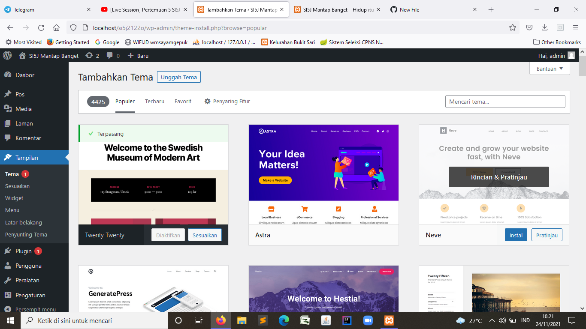
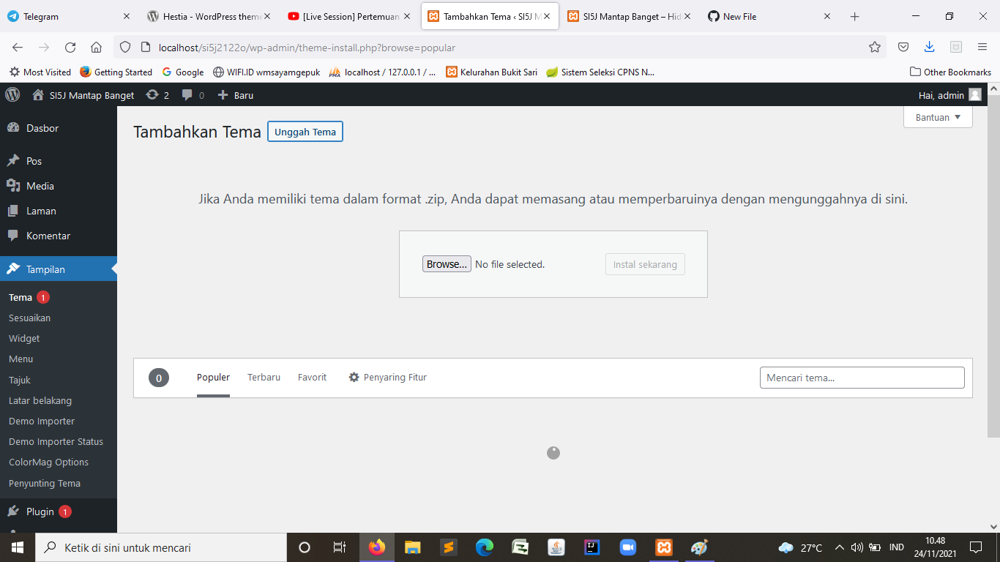
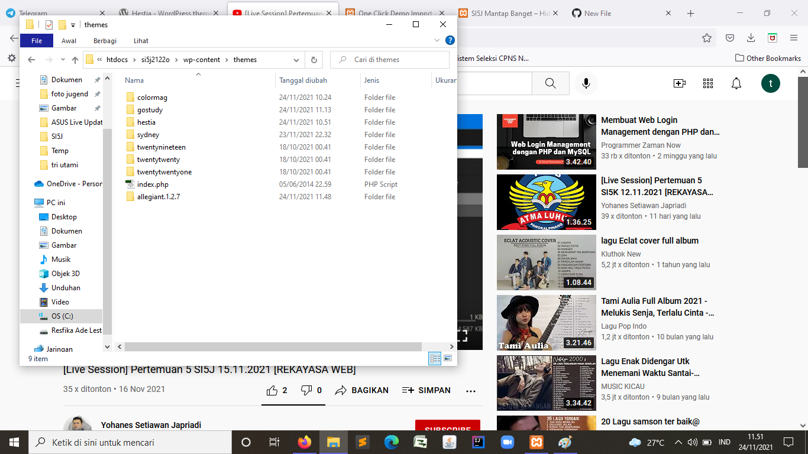
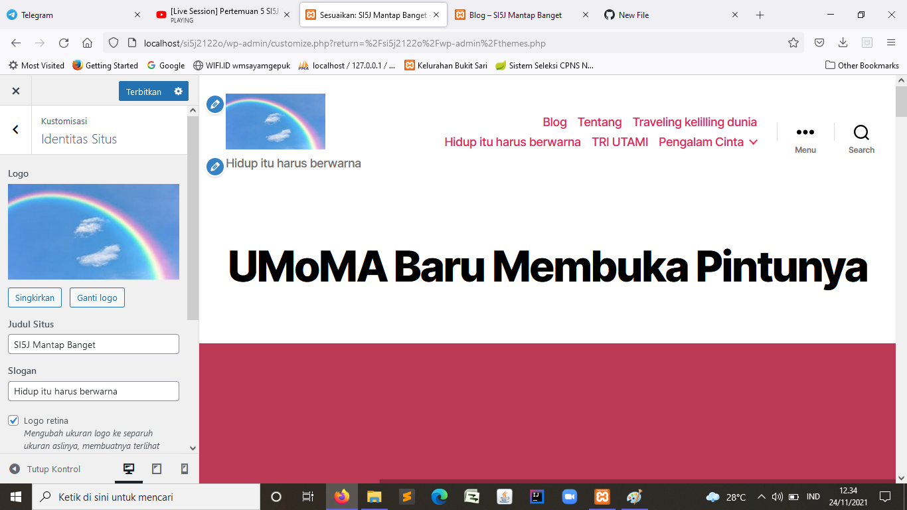

NIM: 1922500071
Nama: Tri Utami
Kelompok: SI5J
Hasil atau kesimpulan dari pertemuan 5 adalah:
- materi pertemuan ke 5 merupakan materi uts
- pada pertemuan 5 membahas tampilan berkaitan dengan tema
- cara mengistal tema secara online dengan menggunakan tema yang sudah disediakan di halaman wordpress
- cara mengistal tema dengan semi online menggunakan mengupload file zip
- cara mengistal tema dengan cara yang sudah di download ditambahkan di wp-conten
- menggantikan dan mengubah tema
- membahas tentang widget
- mengedit dan menambahkan widget
berikut tampilan konten yang telah diposting:



